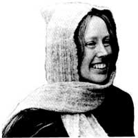
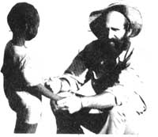

Vickie Cole devotes her time to the design and production of woven works of art. A former anthropology major who started weaving in 1969, Vickie is slowly gaining recognition as a professional weaver.
In her studio near Wasilla, Alaska, Cole crafts a variety of items, from clothing fabric to wall hangings. Vickie spins much of the yarn needed for her work. She uses an assortment of fibers, and notes that each has a "unique feel." Unusual yarns are made from such materials as dog hair from her own St. Bernard and shorn human locks. Cole has also carded and spun chinchilla, bear, and buffalo fur, as well as the musk-ox's qiuiut, which yields a "very, very warm yarn."
Vickie shares her expertise with students at Matanus-ka-Susitna Community College near Palmer, Alaska. Her weaving classes include instruction in dyeing yarn, and students experiment with a number of natural substances-including banana peels and cabbage leaves-to obtain desired shades.
Vickie's weavings can be found in the permanent collections of several museums. One of her wall hangings, on loan to the U.S. ambassador to Brazil, hangs in the embassy at Brasilia. Through her enthusiasm and dedication, Vickie is not only receiving personal acclaim but also helping to instill respect for an art that many have regarded as only an interesting hobby.- Lucille T. Frey.
Patrick Giantonio's urge to wander has taken him across the North American continent and to many exotic lands. While visiting India, Southeast Asia, and Africa, Patrick frequently journeyed through areas plagued by starvation. His repeated encounters with hungry children made him determined to find a way to help alleviate world hunger. When he settled in Woodstock, New York, Giantonio became an active participant in Wood-stock People Against Hunger. His involvement with that organization taught him that one person's efforts can indeed make a difference.
Patrick realized that his love for travel could be put to good use, and he made plans to take to the road once again. On January 1, 1984, he set out from Mombasa, Kenya, and Patrick's Walk to End Starvation began.
Giantonio is now in the midst of his two-year trek across the continent of Africa. One purpose of his journey is to inspire others to work toward overcoming the problem of world hunger. But the walk also has a more concrete goal: to combat malnutrition by providing lifesaving information and materials.
The seven countries on Patrick's itinerary have extremely high infant mortality rates-more than 100 of every 1,000 children die before the age of one (the U.S. rate is 12 per 1,000).
Giantonio's intention is to acquaint the residents of these areas with techniques proposed by UNICEF to increase survival rates. As he goes from village to village, Patrick explains the importance of growth monitoring and breast-feeding, urges participation in immunization programs, and distributes oral rehydration salts, which can prevent death from dehydration. (UNICEF believes that oral rehydration therapy alone could save millions of lives each year.)
Patrick's Walk is a project of Impact on Hunger and is made possible by support from concerned individuals and organizations. (Additional information can be obtained by writing to Patrick's Walk, Impact on Hunger, 145 E. 49th St., New York, NY 10017.)-DM
Actress MARY TYLER MOORE is serving as the international chairperson of the Juvenile Diabetes Foundation (JDF), in conjunction with the organization's campaign to inform the public about promising new research. JDF's primary objective is to work toward a cure for diabetes by raising funds to support necessary research.
DISARMING IMAGES, an art exhibition focusing on the issues of nuclear war and disarmament, opened last fall in Cincinnati, Ohio, and will be on tour through 1986. The exhibition-which features the works of more than 40 American artists-was organized by Bread and Roses, the cultural project of the National Union of Hospital and Health Care Employees.
THE PRUDENTIAL INSURANCE COMPANY furthered the cause of conservation last spring when it donated more than 100,000 acres, of near wilderness to the U.S. Fish and Wildlife Service. The eastern North Carolina land-now known as the Alligator River National Wildlife Refuge-is said to be worth about $50 million, making Prudential's gift one of the largest in conservation history.- DM.
|
 PHOTO BY THE AUTHOR |
 PHOTO COURTESY OF IMPACT ON HUNGER |
|